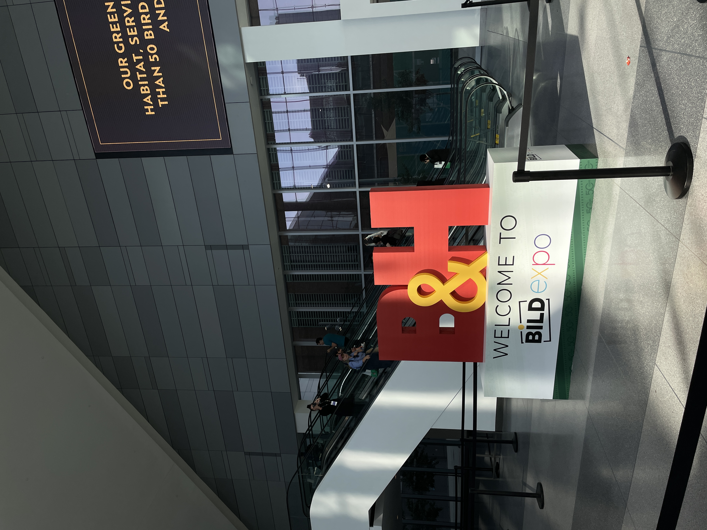
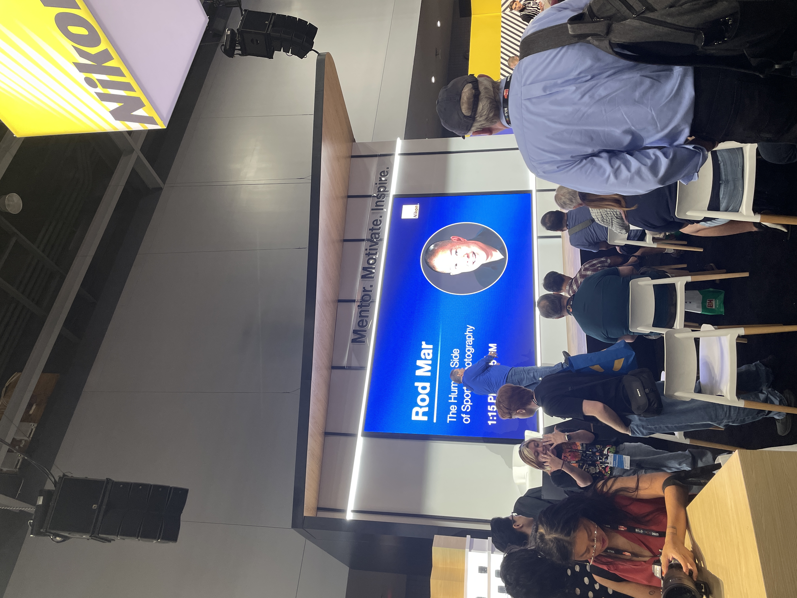

This past week of September 4-10th was a wild one. Monday was Labor Day so I had the day off, but I spent it catching up on homework. On Wednesday night, or Thursday morning, I stayed up til 3am to try to get my readings done so that I could go to the second day of the Bild Photo Expo that Dad sent me. It was 30 min subway away and was pretty busy.

- This is the B&H sign at the front
It was intimidating going to an expo by myself but like NYC, no one pays much attention. I did notice that a lot of the people that were there were mostly of a certain age/gender/race.
When I first walked in, I wandered around and listened to this Rod Mar guy talk about sports photography. I knew most of the stuff he was talking about since Mrs. Howe gave us the same training, so it was funny hearing these lessons like "anticipate the photo" be repeated to a bunch of boomers when I learned that at 15. He talked a lot of basic stuff like that but because he was the photgrapher for the Seattle Seahawks, there were some cool Behind-The-Scenes photos of in the locker room that he showed us. He also looked like Uncle Tony. After a few hours of walking around and listening to some talks, I gathered up some courage to try some cameras. I tried a Nikon first which I don't think I tried before, and it was weird to use. I also couldn't get my SD card out because my fingernails are long so I had to ask for help lol. I also tried a Sony, which I couldn't get the SD compartment door to even open - I had to slide it like the old Canon 5D, I think. That was also first time using Sony. I tried the Fuji x100v which was touchscreen and the LCD display screen was super high quality.
It also felt like better. The buttons were new or something, idk.
From this experience, I was remembered how much I actually knew about photography. AND that I have a camera! Thus, I hope that this semester,
I will be able to take more pictures to show you my college life.
